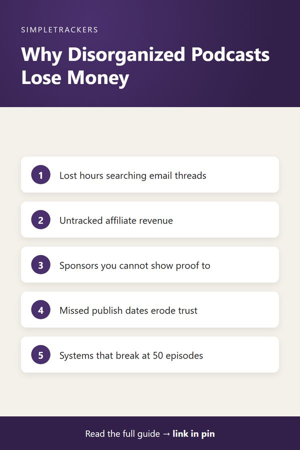

Why Episode Tracking Matters: The Real Cost of Disorganized Podcast Production
← Back to the Complete Podcast Production Guide
Key takeaways
- Ad-hoc systems break: email threads and notes apps work for a few episodes, then fail as the show grows.
- Four hidden costs: lost time, lost revenue, lost audience trust, and a show that can't scale.
- Tracking creates visibility and control: you catch problems before they happen and answer questions in seconds.
- Start before you need it: the best time is before it's urgent; the second-best time is now.
Running a podcast looks simple from the outside: record, edit, publish, repeat. But anyone producing more than a handful of episodes knows the reality is far messier. Between juggling guest schedules, tracking recording dates, managing sponsorship deals, and getting episodes published on time, the operational complexity spirals fast.
Most podcasters start with email threads, Google Docs, or hastily written notes in a Notes app. This works for the first few episodes. But as your show grows, especially if you're running multiple shows, these ad-hoc systems fail spectacularly:
- Episodes slip past their publish date.
- Guest confirmations get lost.
- Sponsorship links don't make it into show notes.
- Revenue from affiliate agreements goes untracked.
The production pipeline becomes a guessing game.
The Hidden Costs of Disorganization
When episode data lives scattered across email, Slack, Google Drive, and handwritten notes, real costs accumulate.
| Cost | What it looks like |
|---|---|
| Lost time | Hours searching for confirmation emails and reconstructing recording dates |
| Lost revenue | No visibility into which promotions converted or which sponsors' commitments were honored |
| Audience trust | Missed publish deadlines and broken or outdated sponsor links |
| Scaling | A workflow that barely worked at 20 episodes collapses at 50 |
1. Lost time
You spend hours searching for a guest's confirmation email, digging through Slack history to find when an episode was actually recorded, or reconstructing which sponsorship deals applied to which episode. That's time stolen from content creation or audience engagement.
2. Lost revenue
Without a system tracking affiliate links episode by episode, you lose visibility into which promotions converted and which sponsors honored their commitments. Sponsorship rates depend on accurate listener numbers and completion rates per episode. You can't measure those if you don't know which episode aired when or how long it actually ran.
The sponsor test
If a sponsor asks for proof that their ad ran in three episodes, can you provide it immediately? Or do you scramble to reconstruct that information?
3. Audience trust
Missing a publish deadline or accidentally publishing with outdated sponsorship links damages credibility. Your listeners expect consistency. When episodes disappear from the RSS feed or show notes link to broken affiliate URLs, it signals amateurism. Sponsors lose confidence in your professionalism and hesitate to renew deals.
4. Scaling becomes nearly impossible
If you launch a second show or bring on a co-host, you need a system both of you can reference instantly. Email threads and shared docs don't scale. Someone forgets to update the master list. Episodes collide on recording dates. Guest details get lost. The production pipeline stops being a workflow and becomes chaos.

What Good Tracking Actually Enables
A structured episode tracking system does more than store data. It creates visibility. At a glance, you can see:
- Pipeline status: which episodes are recorded but not yet published
- Guest status: when guests confirmed and what prep materials you sent them
- Sponsor status: which sponsorship deals are active for which episodes
- Schedule: your publication schedule weeks in advance, with conflicts flagged before they happen
With this visibility comes control. You catch missed deadlines before they happen and confirm episode details with sponsors before going live. You can answer "did that affiliate link actually run in the Thanksgiving episode?" in ten seconds, not ten minutes. Guest coordination runs smoothly because their email, confirmation status, prep materials, and recording date are all in one place.
Tracking enables growth
Once you have a single source of truth for episode data, you can run multiple shows without doubling your workload. A co-host can jump in without asking "wait, when were we supposed to record this?" You can spot patterns in what content resonates, prove sponsorship value to brands, and plan content strategically instead of reacting to chaos.
Starting with a System
This is why tracking matters. Not because tracking is fun or exciting, but because it's the operational foundation that lets everything else work. Without it, you're limited:
- Your show can't scale.
- Your sponsors can't trust you.
- Your audience can't count on consistency.
- Your revenue stays flat because you're too busy chasing details to think strategically.
The best time to implement a tracking system is before you need it desperately. The second-best time is right now. If your episode workflow lives in email and notes, that's the first thing to fix.
The Podcast Producer & Episode Management Tracker is designed exactly for this: a centralized system for guest coordination, recording schedules, publication timelines, and sponsorship tracking. With a proper system, you reclaim the time, visibility, and control that turns a podcast from a side project into a sustainable business.
Visit the Podcast Producer & Episode Management Tracker on Gumroad to see how other podcasters organize their production pipelines and scale their shows.